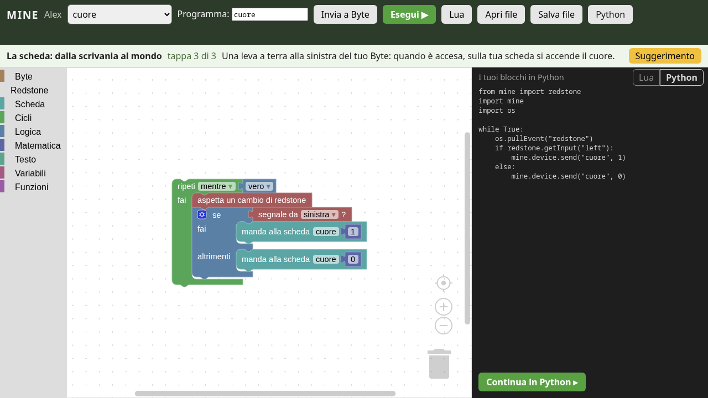
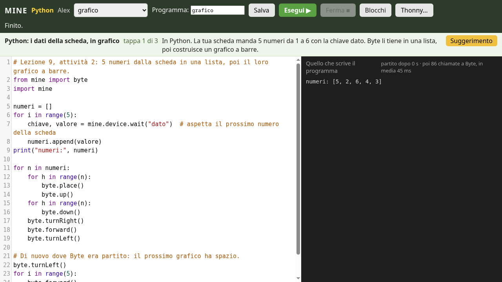
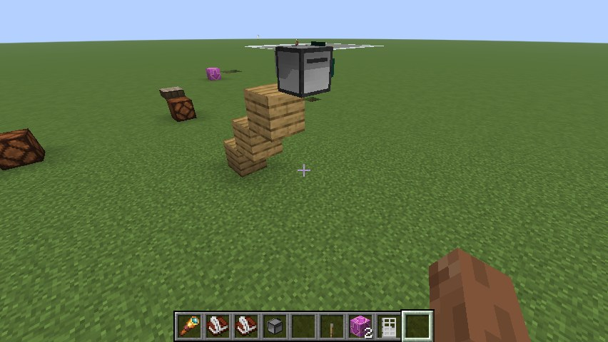
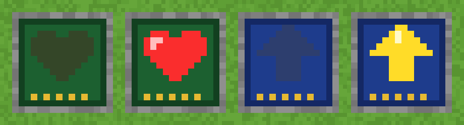

MINE
Mine Is Not Education
Minecraft a scuola, anche su Linux. Libero, gratuito, fatto da chi insegna.
Ogni studente ha Byte, un robot da programmare a blocchi, in Lua e in Python. Le lezioni le verifica il server, il micro:bit apre le porte del mondo, e la scuola tiene tutto sul suo server.
Novità · v0.1.0, ottobre 2026 — sedici lezioni, dal labirinto ai messaggi segreti; Byte in Python, nell'editor e in Thonny; micro:bit, Arduino e il Raspberry Pi Pico 2 W in Wi-Fi. Cosa c'è di nuovo

Caratteristiche
Gli strumenti per insegnare di Minecraft Education, rifatti per Minecraft Java: la scuola li usa sui suoi PC, anche Linux, con il suo server.
Per chi insegna
Lezioni che si verificano da sole
Sedici lezioni pronte, con guida per l'insegnante. Il server guarda cosa ha fatto davvero Byte e dice allo studente cosa manca, con sfide nuove a ogni tentativo.
La classe entra con quattro simboli
Niente nomi da scrivere: gli studenti cliccano il codice classe al proiettore e arrivano nella loro corsia del laboratorio.
Mondi di classe e zone protette
Un mondo per classe, zone da salvare e rimettere com'erano con un comando, zone che nessuno studente può rompere.
Personaggi, lavagne e quiz
Ada e gli altri NPC parlano e fanno domande: si scrivono in un libro, senza programmare. I risultati si scaricano in un foglio di calcolo.
Portfolio e gallerie
La fotocamera nel gioco, le note dell'insegnante, le gallerie di classe, l'esportazione in pagine web.
Il server in un comando
Un installatore per Linux: servizio, backup ogni notte, firewall. Un PC vecchio basta.
Per chi impara
Byte, il tuo robot
Cammina, costruisce, scava, sente la redstone. Un byte è un blocco di 8 bit: Byte lavora con i blocchi del mondo.
Blocchi, Lua, Python
Si comincia con i blocchi nel browser, si vede il Lua e il Python che fanno, si continua a mano. Stessi nomi in ogni linguaggio:
byte.forward().Python vero
Nell'editor del browser o in Thonny sul PC, con gli errori spiegati in italiano e la riga colorata.
micro:bit, Arduino, Pico
Il pulsante della scheda apre una porta nel gioco, una leva nel gioco accende il cuore sulla scheda. Con il cavo, o il Pico 2 W in Wi-Fi; anche senza codice, con due blocchi.
Suggerimenti quando servono
Uno alla volta, nelle parole dei blocchi, del Lua o del Python.
Per chi crea
Lezioni come file
Una lezione è un file JSON: obiettivi, suggerimenti, controlli, oggetti da dare. Si scrive senza toccare il codice, si traduce, si condivide.
Software libero
Licenza Apache 2.0. Costruito su Fabric e CC: Tweaked, con Blockly, MicroPython e CodeMirror.
Provato a ogni modifica
Oltre cento test girano nel gioco a ogni modifica, comprese le soluzioni delle lezioni in Lua, a blocchi e in Python.
Una comunità da costruire
Insegnanti, sviluppatori, tecnici, traduttori: MINE è all'inizio e ha bisogno di tutti.
Galleria



Lezioni
Un'ora ciascuna, con piano della lezione, soluzioni e problemi frequenti. Per 10–14 anni in Lua o a blocchi; per i più grandi in Python, con un micro:bit, un Arduino o un Pico 2 W.
- 1Primi passi con Byteistruzione, sequenza, programma
- 2I cicli: file, pavimenti e cubicicli annidati, area e volume
- 3Debugging: ripara i programmi di Byteleggere gli errori, correggerli
- 4Le condizioni: Byte decidevero e falso,
if,while - 5Variabili e funzionicontatori, funzioni, parametri
- 6Redstone: Byte ascolta e accendeingressi, uscite, eventi, E / O
- 7Sensori: Byte aspetta e ricordasensori, timer, memoria
- 8La scheda: dalla scrivania al mondomicro:bit e Arduino, messaggi, soglie
- 9PythonPython: i dati della scheda, in graficoliste, funzioni, misure in scala
- 10Il labirinto: una mano sul muroalgoritmo,
and/not, contatore - 11Caccia al tesoro: le coordinatecoordinate, variabili, funzioni
- 12PythonLa serra connessa (Pico 2 W)media, soglia, dati via Wi-Fi
- 13PythonIl controllo automatico (micro:bit)soglia, isteresi, stato
- 14PythonIl passaggio a livello (Arduino)macchina a stati, eventi
- 15La fattoria: file e campicicli annidati, condizioni
- 16Messaggi segreti: il cifrario di Cesarecaratteri,
%, forza bruta
Scarica
Due file: uno per il server della classe, uno per i PC del laboratorio. Servono un account Minecraft Java per ogni studente e un PC Linux per il server.
Il server
Per un PC Linux (Fedora, Ubuntu, Debian), sempre acceso durante le lezioni. Dentro c'è un README che spiega tutto.
unzip MINE-server.zipcd MINE-serversudo ./install.sh --teacher IlTuoNome
I PC del laboratorio
Linux, Windows o macOS: in Prism Launcher (o nella Modrinth App) Aggiungi istanza → Importa questo modpack. Il server compare da solo nella lista Multigiocatore.
MINE.mrpackLa guida
Installare il server e i PC, il codice classe, il laboratorio, i mondi, le schede, Python.
Perché MINE
Minecraft Education è un ottimo strumento per insegnare, ma funziona solo su Windows, macOS, iPad e Chromebook, e chiede le licenze di Microsoft 365 Education. I laboratori Linux, e le scuole che vogliono scegliere da sole, restano fuori.
MINE porta quegli strumenti in Minecraft Java, che su Linux gira benissimo. Il server è della scuola, il codice è di tutti, le lezioni le scrivono gli insegnanti.
Cosa non è
- Non è una copia di Minecraft Education, e non usa niente di Microsoft.
- Non è gratis giocare: ogni studente ha bisogno di un account Minecraft Java.
- Non è finito: cosa manca è nella roadmap, aperta a chi vuole dare una mano.
Partecipa
MINE è un progetto della comunità. Le persone più preziose sono quelle in classe.
Insegnanti
Raccontaci le lezioni che fai, o che vorresti fare, con Minecraft: decidono cosa costruiamo.
Proponi una lezione →Sviluppatori
Java e Fabric per la mod, Lua e Python per Byte, JavaScript per gli editor.
Come cominciare →Tecnici e tester
Prova MINE su PC veri, dal portatile vecchio al server del laboratorio.
Segnala un problema →